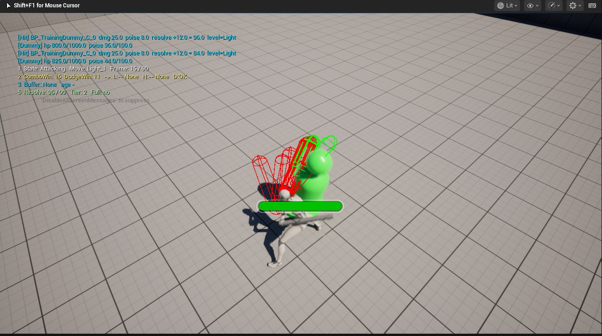

设计理念
高速 ACT 战斗里最重要的是玩家角色和 Boss 之间的交互。
我认为魂系那种以体力槽为核心的攻防，本质上是回合制——你打完我打，
中间由体力决定谁能动。而动作游戏的主基调应该是见招拆招、手眼协调、
互相进攻，以及夹在其中的一点点策略。
所以这个 demo 鼓励玩家和 Boss 对着打。面对 Boss 的攻击，玩家可以闪避也可以格挡，
完美闪避和完美格挡都给很高的回报。Boss 的韧性条会在一段时间不受攻击后随时间回升，
这是为了让玩家在观察 Boss 出招的同时不能完全不出手。
给勇敢的玩家应得的奖励，在玩家没有犯错的时候不要惩罚他——这是我的设计理念。
已实现闪避与取消规则；完美闪避的判定窗口与奖励结构已定义并接入
待做完美格挡（弹反）
待做韧性条随时间回升，用来惩罚纯观望
完整设计案 14 页，含 11×3 取消矩阵原表、输入缓冲仲裁流程、Boss 二阶段状态机与七条数值推导原则：
下载 PDF。
系统怎么落地
全部时序数字集中在一张 23 列的帧数据表里。取消矩阵是这张表的视图，本身不存数值，
所以调整任何一个窗口都只要改表，不用动蓝图。

PIE 实机。左上是运行时 Debug 输出：当前状态 Attacking、招式 Light_1、
第 15 / 90 帧，连段窗口 F16、闪避窗口 F11、
输入缓冲为空、决 96 / 99。红色线框是这一刀判定胶囊体的逐帧轨迹，绿色是命中的木桩。
演示视频
29 秒，Debug HUD 全程可见。左上角实时打出当前状态、招式、第几帧、连段与闪避窗口、输入缓冲和决值——画面上每一次连段和取消，都能对上这张表里的数字。
取消窗口：承诺、出路、接续
整张矩阵由三条原则推导出来，不是逐格填的。
R1
起手是承诺，判定之后才有出路
任何攻击的闪避取消帧等于它的判定开始帧。如果起手就能闪，攻击不需要付代价；如果要等收招才能闪，玩家不敢起手。切在判定开始，风险与出路各占一半——按下攻击这个决定本身不该被惩罚，读错时机才该。
R2
打完才能接，空挥要等
连段取消开在判定结束之后 2–4 帧。空挥时这几帧就是代价，打中时几乎感觉不到。连段的顺滑是打中之后才给的。
R3
闪避优先级永远最高，无例外
任何状态下只要闪避窗口开着，闪避输入压过一切。这条一旦开例外（比如「重击不可被闪避取消」），玩家会干脆不用那个招式。玩家想活下来的时候，系统不该拦他。
下面是实际的帧窗口。切换招式看三段怎么分——注意「闪避」那一行。
Cancel Window Timeline
TOTAL 90F @ 60FPS
F0F90
承诺期 · 按什么都不响应
可闪避 · 出路已开，连段还没开
可接续 · 轻击 / 重击都能接
四处刻意的不对称
矩阵里有四个地方我故意没有对称。这一节比矩阵本身更重要——它证明的不是「我会做取消系统」，而是我知道每一个数字在引导玩家做什么。
闪避接攻击 F16，比闪避接闪避 F22 早 6 帧
闪完接攻击比闪完再闪快 6 帧，玩家自然会选前者。如果反过来，连续闪避更划算，高速 ACT 会退化成一路滚到 Boss 背后再打。这 6 帧决定了这套战斗奖励进攻还是奖励逃跑，对应设计理念里的「鼓励玩家与 Boss 对攻」。
重击的轻击取消（F19–F22）远早于它的收招结束（F79–F103）
重击留了 60–81 帧的提前脱离空间。它的代价由空挥承担：没打中就吃满收招。打中了却还要站在原地挨一套，等于惩罚一个做对了的玩家，重击就没人愿意用。
受轻击硬直里，闪避取消 F6 远早于攻击取消 F14
被打的时候能更快闪，但不能更快打。受击硬直里玩家最需要的是脱身手段，F6 就把它给出去；反打要多等 8 帧。这是 R3 在受击状态下的落实。
轻击三段的取消帧 F43，是一二段（F16 / F11）的三倍以上
我最初对三段轻击套用了同一条取消规则。试玩时发现第三段刚砍完就能被第一段打断，动画被掐掉，而且循环一次没有任何代价。
归因之后才想明白：前两段的取消是「连接」，第三段的取消是「循环」。
一二段截掉收招看不出来，后一刀的起手接得上前一刀的收势；三段的收势和第一段的起手对不上，早取消就会看到第三刀被生生掐断。两者不该用同一条规则。
F43 是挥砍视觉收完、开始回站姿的那一帧——让玩家看完这一刀，但不必看完回身。
「决」资源系统：数值是反解出来的
这套数值是反解出来的。我先写下想要的体验：读中一次招，加上打出一套完整连段，正好破甲，再让每一项的收益去凑这个等式。
Resolve Economy拖动滑块
完美闪避 +33+窗口内首次命中 +20+三段连 12+14+20 = 46=99=满决
0
5.4s纯输出打满 99 决所需的实际时间
0 次完闪5.4s
1 次完闪2.5s
2 次完闪即时
纯蓄力兜底11.8s
一次完美闪避让破甲时间减半。
玩家不用看任何说明就能感觉到读招比站桩快得多。这是设计理念里「给高风险动作高回报」的直接落点。
蓄力效率压到轻击链的 45.7%，定位是够不到 Boss 时的兜底。如果它和贴身输出效率接近，玩家会站远处一直蓄，战斗就死了。
帧数据是实测的，不是估的
引擎的 API 读不到 Animation Notify 的起止帧，读和写两个方向都不支持。判定窗口是这套系统里最关键的一组数字，而我拿不到。解决办法是让判定条自己报数：运行时把当前帧号写进日志，再把日志读回来。实测值与编辑器里显示的完全一致。
回填之后发现的问题
轻击二段的取消帧原本写的是 F18，而它的判定第 8 帧就结束了——中间 10 帧是纯死时间，正是试玩时「不跟手」的直接来源。一直用设计预期值的话，这个问题不会浮出来。
同一套思路还落成了一个运行时校验函数：每次开始游戏检查五条不变式，违规时报出「哪一行 / 违反第几条 / 涉及的数各是多少」，而不是只说一句数据错误。
当前状态：做完了什么，还差什么
这是一个进行中的项目。已经写好规格但还没实现的部分，我单独标成「已定义」，边界写在下面。
已实现输入缓冲与优先级仲裁、跨状态缓冲保留策略
已实现取消矩阵仲裁、招式执行、球体扫描判定与单次挥砍去重
已实现「决」的积累与分段释放仲裁、帧表运行时校验
已定义Boss 一阶段：5–6 招、四类可应对标记、决策权重表
已定义二元护甲门槛与破韧后的处决窗口（约 120 帧的二选一博弈）
未实现反馈链的屏震 / FOV / 音效 / 特效（目前只有顿帧）
未实现单目标锁定、四方向闪避位移、战斗姿态 locomotion、正式 UI
locomotion 的一处穿帮
角色的 locomotion 还是引擎模板的徒手动画，而攻击动作是持剑姿态。每次收招都会在 6 帧内被拽回徒手站姿——角色演了 54 帧回到战斗站姿，最后 6 帧全部作废。
我一度误判了它。当时提出的验证方法是「看角色是不是握着剑」。但剑是挂在手骨上的静态网格，播任何动画都在手里，这个观察不可能推翻任何假设。后来查资产依赖才确认，引用的动画全部在 Unarmed/ 目录下。之后我给自己定了一条：先问什么结果能推翻这个猜想，再去做测试。
借鉴谱系
借了什么、改了什么、为什么改。
| 机制 | 借鉴自 | 我改了什么 |
|---|
| 轻击生产 / 重击消费的资源循环 | 黑神话：悟空
棍势 | 保留结构。这是地基，不必回避 |
| 满资源才能破甲、一击定生死 | 只狼
躯干条 → 忍杀 | 只狼攒的是打在对方身上的架势；我攒的是玩家自己的决意——主动权在玩家，不在 Boss 的容错 |
| 防御成功直接转化为进攻资源 | 贝优妮塔 / 忍者龙剑传 | 它们给的是时间，我给的是资源数量。资源可累积、可跨回合携带，时间不能 |
| 护甲期打不动血但推进另一条进度 | 怪物猎人
部位破坏 | 怪猎的部位破坏是可选支线，我的是唯一主线 |
资源循环的壳来自黑神话悟空，临界点一击的内核来自只狼，防御成功转化为进攻资源的接口来自贝优妮塔与忍者龙剑传。